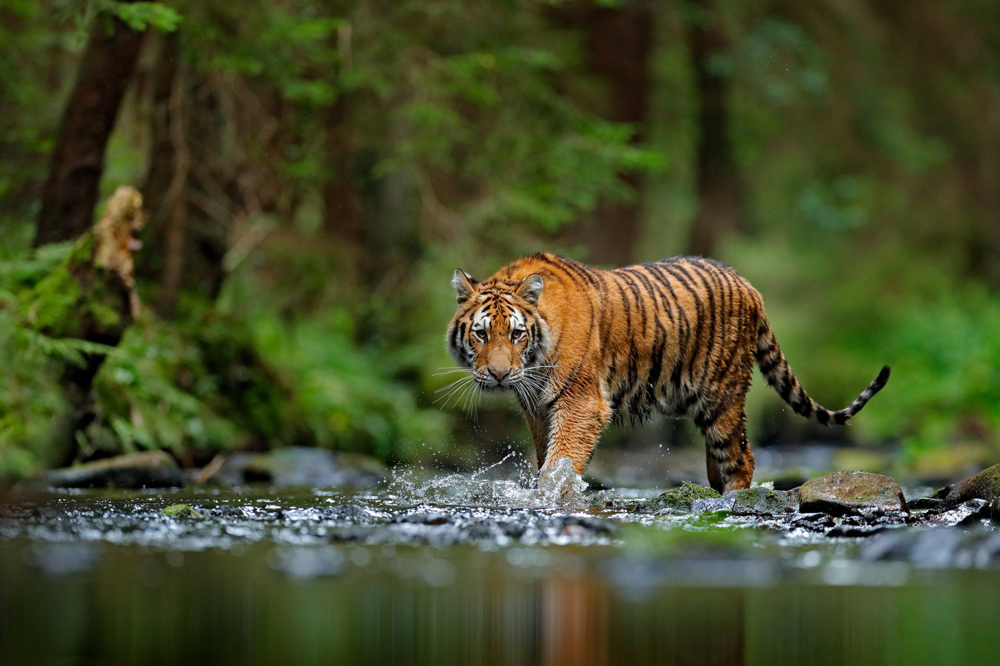

Home About Contact Signup



I am pleased to welcome you to our website. In Patna, Sanjay Gandhi Biological Park is a place of attraction for visitors, and it is only Zoo of Bihar. It is commonly known as 'Patna Chiriyaghar' or 'Patna Zoo'. There are 108 different species of wild animals found in Sanjay Gandhi Biological Park, out of which 50 species are under endangered category. Total number of animals and birds in Patna Zoo is 1163. An around 25 lakh visitors visit this Zoo every year and there is a significant increase in no. of visitors in last few years. Patna Zoo is world famous for ex-situ conservation breeding of one horned rhinoceros. Other mammals such as Royal Bengal Tiger, White Tiger, Black Beer, Giraffe are also breeding successfully and constantly increasing number of healthy animals . The botanical section of this Biological Park includes Aquatic Park, Medicinal Nursery, Fern House, Green House, etc. Aquarium, Aviary, Children Park and Boating facility is an added attraction for the visitors. Zoo administration is fully dedicated for better health and nutrition of all the wild animals. In general, public utility facilities like Toilet, Canteen, Drinking water facilities, etc. are good but there is an ample scope for improvement. Animal Adoption Scheme is going on in the Sanjay Gandhi Biological Park and I appeal on behalf of Patna Zoo to come forward and adopt animal that shows your care. Since there is always a scope for continuous improvement in the journey towards excellence, your valuable suggestion and feedback is solicited.
Keeping in view the guidelines of the National Zoo Policy (1998), the objectives of Sanjay Gandhi Biological Park, Patna have been framed as follows: Conservation and captive breeding of different species, particularly the endangered and endemic species of the Gangetic Plains region for preservation of bio-diversity, exchange with other zoological parks and rehabilitation of suitable species in the wild. Research and scientific study on animal behaviour, diseases and their control, feed and nutrition and reproductive biology. Promotion of nature education and creating awareness about wildlife conservation. To develop it as a training centre on management of wild animals including zoo designing for veterinarians, keepers, wildlife people taking advantage of the knowledge and experience gathered in captive management of wildlife here. Providing healthy wholesome recreation to the visitors utilizing ambiance of the setting of the zoological park keeping in view the safety and upkeep of the zoo animals. Recreation shall only be incidental and shall not be the main objective at any time. To develop the facilities in the zoo so that it can act as rescue-cum- rehabilitation centre for wild animals in suffering.
The Sanjay Gandhi Biological Park, Patna was established as a Botanical Garden vide Government of Bihar, Forest Department's letter no. 1781V dated 13.4.1970 on a chunk of 34.00 acres land being part of the Governor’s campus. His Excellency the then Governor of Bihar, Shri Nityanand Kanoongo bestowed the land to the forest department to establish the garden. The Divisional Forest Officer, Gaya Forest Division was deputed as officer-in-charge of the Garden. In 1972 the name was changed to Biological Park by the Department of Forests, Govt. of Bihar, and, it was brought under the administrative control of the Working Plan Officer, Magadh Circle, Patna. Later on the adjoining 58.20 acres land of Revenue Department and 60.75 acres land of Public Works Department transferred to Forest Department was added to the existing Biological Park. Thus, present area of the Biological Park is approximately 153 acres. The land acquired from Public Works Department and Revenue Department is notified as Protected Forest by the State Government. The State Government has declared the park/zoo service as ‘Essential Service’ under the Bihar Essential Services Maintenance Act. In the year 1980, the name was changed to Sanjay Gandhi Biological Park
Time Table of Sanjay Gandhi Biological Park March to October - 5.00 AM to 6.00 PM November to February - 6.00 AM to 5.00 PM Monday Closed
Rescue team is constituted and started in Sanjay Gandhi Biological Park, Patna since 2015. Objective of this team is to provide support to DFO’s and other department to help them in rescuing of strayed out wild animals. This team has total 5 persons including monkey catcher, snake charmer, driver, veterinary doctor and compounder who accompany the team during rescue operations. So far Tiger, Monkey, Leopard, Bears, Snakes, Birds have been rescued successfully.
PATNA-ZOO NEW DELHI-ZOO MUMBAI-ZOO KOLKATA-ZOO HYDRABAD-ZOO CHENNAI ZOO